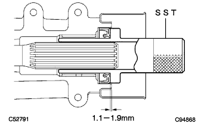

トランスファ エクステンション ハウジング オイルシール（4WD） 取り付け |
| 1. トランスファ エクステンション ハウジング オイルシール取り付け |
SSTおよびハンマーを使用して、新品のオイルシールを図の位置までエクステンションハウジングに打ち込む。
|  |
オイルシールのリップ部に少量のMPグリースNo.2を塗布する。
| 2. プロペラシャフト ウィズ センタベアリングASSY仮締め |
 |
エクステンションハウジングからSSTを取りはずし、プロペラウィズセンタベアリングシャフトASSYを挿入する。
 |
ボルト４本で、インタミディエイトシャフトASSYを仮締めする。
 |
プロペラシャフトASSY RRおよびディファレンシャルフランジの合わせマークを合わせ、ボルト４本、ワッシャおよびナット各４個で、プロペラシャフトASSY RRを取り付ける。
| 3. プロペラシャフト ウィズ センタベアリングASSY本締め |
 |
ジャッキを使用して、リヤアクスルハウジングを持ち上げ、サスペンションに荷重をかける。
フロントおよびリヤのセンタサポートベアリングハウジング後端面とクッション後端面とが基準値の範囲内になるように調節する。
センタサポートベアリングブラケット中心線がプロペラシャフト軸に対して直角になっていることを確認する。
|
ボルト４本を本締めする。